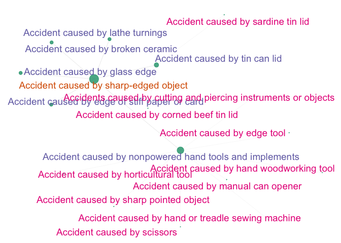
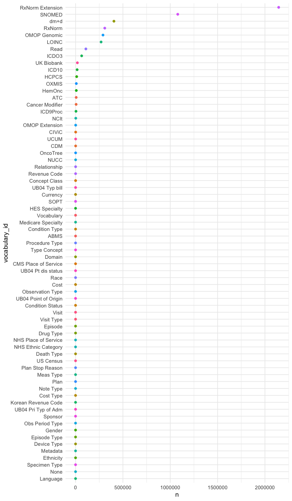

Active development 2025, breaking changes possible
omopcept provides access to OMOP conCEPTs (all pros, no cons!).
Makes it super-easy to get the names associated with concept IDs and allows exploration and visualisation of OMOP hierarchies.
Link to poster & report presented at OHDSI Global Symposium 2024.
omopcept provides R functions that are :
- modern
- flexible
- tidyverse compatible
- memory efficient (using arrow parquet)
omopcept includes concise named copies of functions designed for interactive use e.g. oid() and onames() to search concept ids and names respectively. For example the line below can be used to return all ~ 1000 OMOP ids for SNOMED codes for clinical drugs starting with A.
Installation
Install the development version of omopcept with:
# install.packages("remotes")
remotes::install_github("SAFEHR-data/omopcept")OMOP vocabularies data
OMOP vocabularies can be searched and downloaded from Athena – the OHDSI vocabularies repository. omopcept provides R tools to interact with OMOP concepts in a more reproducible way.
omopcept can use vocabulary files that you have downloaded from Athena, or automatically download a subset of the vocabularies that we have saved in the cloud.
Getting started with omopcept
On initial use omopcept tries to download OMOP vocabulary files from the cloud to a local package cache where it can be accessed in future sessions. The arrow R package allows parquet files to be opened and queried in dplyr pipelines without having to read in the data. e.g. the code below will return just the top rows of the concept table.
library(omopcept)
omop_concept() |>
head() |>
dplyr::collect()Main omopcept functions
| full name | quick interactive name | action |
|---|---|---|
omop_names() |
onames() |
search concepts by parts of names |
omop_id() |
oid() |
search for concept_id(s) |
omop_domain() |
- | return domain for concept_id(s) |
omop_join_name() |
ojoin() |
join an omop name column onto a table with an id column |
omop_join_name_all() |
ojoinall() |
join omop names columns onto all id columns in a table |
omop_check_names() |
ochecknames() |
check that names match ids |
omop_ancestors() |
oance() |
return ancestors of a concept |
omop_descendants() |
odesc() |
return descendants of a concept |
omop_relations() |
orels() |
return (immediate) relations of a concept |
omop_relations() |
orels() |
return (immediate) relations of a concept and the relations of those up to nsteps including the nature of the relationship e.g. ‘Is a’ |
omop_graph() |
- | graph omop relationships (experimental) |
omop_concept() |
oc() |
return reference to concept table (for use in dplyr pipelines) |
omop_concept_ancestor() |
oca() |
return reference to concept ancestor table |
omop_concept_relationship() |
ocr() |
return reference to concept relationship table |
omop_concept_fields() |
ocfields() |
names of concept table columns |
omop_concept_ancestor_fields() |
ocafields() |
names of concept ancestor table columns |
omop_concept_relationship_fields() |
ocrfields() |
names of concept relationship table columns |
OMOP outline
The OMOP Common Data Model is an open standard for health data. “[It is] designed to standardize the structure and content of observational data and to enable efficient analyses that can produce reliable evidence”.
OMOP is maintained by OHDSI (pronounced “Odyssey”). “The Observational Health Data Sciences and Informatics program is a multi-stakeholder, interdisciplinary collaborative that strives to improve medical decision making and bring better health outcomes to patients around the world.”
OMOP vocabularies in the background
Vocabularies downloaded from Athena include tables called CONCEPT.csv, CONCEPT_ANCESTOR.csv and CONCEPT_RELATIONSHIP.csv.
You have two main options :
manually download selected vocabulary csv files from Athena, use
omopcept::omop_vocabs_preprocess()automatically download pre-processed vocabulary files saved in the cloud by us
omopcept downloads a selection of vocabularies and stores them locally the first time you use it (in the recommended data location for R packages). The download does not need to be repeated until you update the package. Vocabularies are stored as parquet files that can be queried in a memory-efficient manner without having to first read the data in to memory.
OMOP concept table fields
| fields | about | query_arguments |
|---|---|---|
| concept_id | unique id | c_ids |
| concept_name | descriptive name | pattern |
| domain_id | e.g. drug, measurement | d_ids |
| vocabulary_id | e.g. LOINC, SNOMED | v_ids |
| concept_class_id | e.g. Clinical Observation, Organism | cc_ids |
| standard_concept | standard or not | standard |
| concept_code | source code | |
| valid_start_date | ||
| valid_end_date | ||
| invalid_reason |
omop_names(): query concepts by their names
omop_names("chemotherapy", v_ids="LOINC")
#> # A tibble: 71 × 10
#> concept_id concept_name domain_id vocabulary_id concept_class_id
#> <int> <chr> <chr> <chr> <chr>
#> 1 1035179 Chemotherapy - IV Meas Val… LOINC Answer
#> 2 1035159 Chemotherapy - Oral Meas Val… LOINC Answer
#> 3 1035128 Chemotherapy - Other Meas Val… LOINC Answer
#> 4 45882480 Chemotherapy, NOS Meas Val… LOINC Answer
#> 5 45876436 Chemotherapy Administered Meas Val… LOINC Answer
#> 6 45884295 Unknown if any chemother… Meas Val… LOINC Answer
#> 7 45880125 No chemotherapy administ… Meas Val… LOINC Answer
#> 8 45879751 Chemotherapy Meas Val… LOINC Answer
#> 9 45882373 Chemotherapy spill Meas Val… LOINC Answer
#> 10 45878374 Chemotherapy, single age… Meas Val… LOINC Answer
#> # ℹ 61 more rows
#> # ℹ 5 more variables: standard_concept <chr>, concept_code <chr>,
#> # valid_start_date <date>, valid_end_date <date>, invalid_reason <chr>
omop_names("chemotherapy", v_ids=c("LOINC","SNOMED"), d_ids=c("Observation","Procedure"))
#> # A tibble: 316 × 10
#> concept_id concept_name domain_id vocabulary_id concept_class_id
#> <int> <chr> <chr> <chr> <chr>
#> 1 36305649 Chemotherapy infusion st… Observat… LOINC Clinical Observ…
#> 2 36305185 Chemotherapy infusion st… Observat… LOINC Clinical Observ…
#> 3 36305554 Chemotherapy infusion st… Observat… LOINC Clinical Observ…
#> 4 36305537 Chemotherapy infusion st… Observat… LOINC Clinical Observ…
#> 5 36660670 Cancer chemotherapy rece… Observat… LOINC Clinical Observ…
#> 6 3046488 Chemotherapy [Minimum Da… Observat… LOINC Survey
#> 7 40768860 Cancer chemotherapy rece… Observat… LOINC Clinical Observ…
#> 8 36303659 Guidance for chemoemboli… Procedure LOINC Clinical Observ…
#> 9 1024644 Guidance for chemoemboli… Observat… LOINC LOINC Component
#> 10 1004252 Flag for Date 1st chemot… Observat… LOINC LOINC Component
#> # ℹ 306 more rows
#> # ℹ 5 more variables: standard_concept <chr>, concept_code <chr>,
#> # valid_start_date <date>, valid_end_date <date>, invalid_reason <chr>
omop_join_name(): join concept names onto a *concept_id dataframe column
Helps to interpret OMOP data.
data.frame(concept_id=(c(3571338L,4002075L))) |>
omop_join_name()
#> # A tibble: 2 × 2
#> concept_id concept_name
#> <int> <chr>
#> 1 3571338 Problem behaviour
#> 2 4002075 BLUE LOTION
data.frame(drug_concept_id=(c(4000794L,4002592L))) |>
omop_join_name(namestart="drug")
#> # A tibble: 2 × 2
#> drug_concept_id drug_concept_name
#> <int> <chr>
#> 1 4000794 BUZZ OFF
#> 2 4002592 DEXAMETHASONE INJECTION
omop_join_name_all(): join concept names onto all *_concept_id columns in a dataframe
data.frame(concept_id=(c(3571338L,3655355L)),
drug_concept_id=(c(4000794L,35628998L))) |>
omop_join_name_all()
#> # A tibble: 2 × 4
#> concept_id concept_name drug_concept_id drug_concept_name
#> <int> <chr> <int> <chr>
#> 1 3571338 Problem behaviour 4000794 BUZZ OFF
#> 2 3655355 Erectile dysfunction 35628998 Retired SNOMED UK Drug extens…
omop_graph(): starting to visualise OMOP hierarchies
sharp <- omop_names("Accident caused by sharp-edged object", standard="S")
relations <- omop_relations(sharp$concept_id,
r_ids=c('Is a','Subsumes'),
nsteps=2)
omop_graph(relations, saveplot=FALSE, graphtitle=NULL,
legendshow=FALSE, nodetxtsize=5, textcolourvar="step")
#>
#> The downloaded binary packages are in
#> /var/folders/pl/k11lm9710hlgl02nvzx4z9wr0000gp/T//RtmpDoD4KN/downloaded_packages
#>
#> The downloaded binary packages are in
#> /var/folders/pl/k11lm9710hlgl02nvzx4z9wr0000gp/T//RtmpDoD4KN/downloaded_packages
Vocabularies included
The vocabularies that omopcept downloads automatically are a default download from Athena with a few extra vocabs added. If you wish to control which vocabularies are included you can manually download vocabulary csv files from Athena.
Numbers of concepts in automatic omopcept vocabulary download by domain and vocabulary
library(dplyr)
library(ggplot2)
library(forcats)
concept_summary <-
omop_concept() |>
count(vocabulary_id, sort=TRUE) |>
collect()
ggplot(concept_summary,aes(y=reorder(vocabulary_id,n),x=n,col=vocabulary_id)) +
geom_point() +
labs(y = "vocabulary_id") +
guides(col="none") +
theme_minimal()
Acknowledgements
Development of omopcept has been partly supported by the UCLH Biomedical Research Centre.